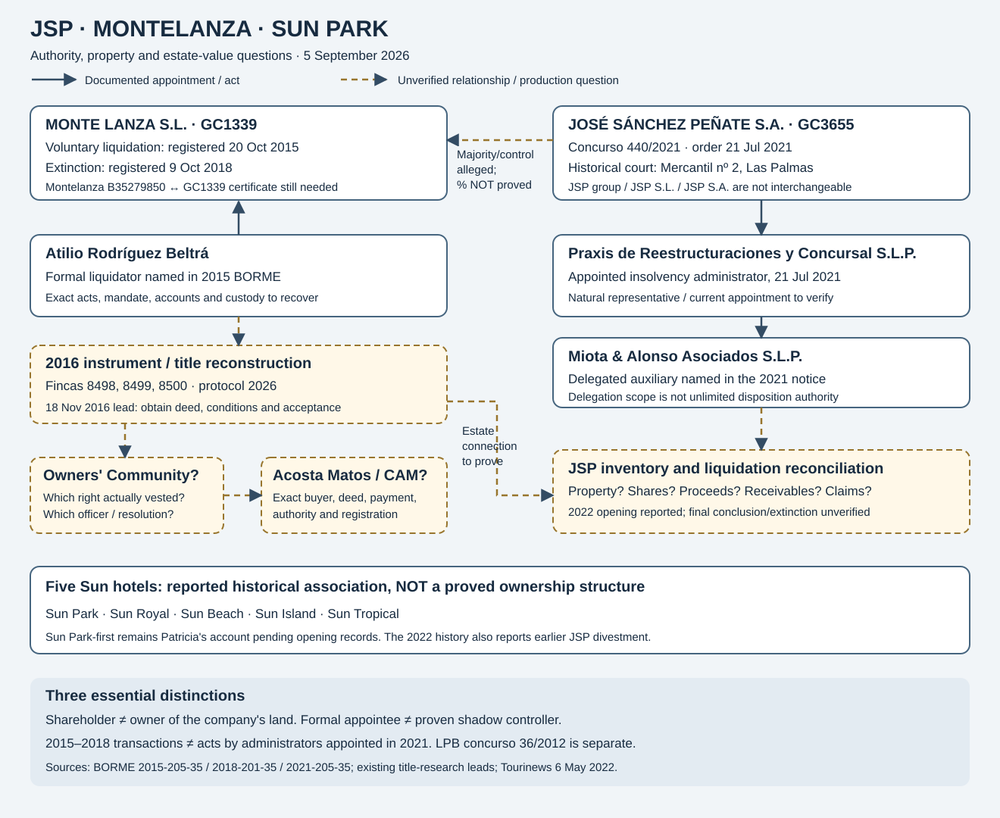

PD-JSP-RESEARCH-20260905 · source review: 5 September 2026
JSP: hotel history, Montelanza and insolvency 440/2021
Two separate liquidations, one traceability question: which assets, rights, obligations and value moved—or should have been accounted for—between the historic hotel interests, Montelanza's winding-up and JSP's later insolvency?
Gil Marer requests investigation of possible criminal conduct affecting Sun Park, LPB, Aweswell, Matkator and JSP's creditors. This dossier does not establish a common plan, a particular conveyance to the Community or CAM, hidden consideration or majority ownership of Montelanza by JSP.
JSP and the five Playa Blanca hotels
The history published in 2022 connects José Sánchez Rodríguez and JSP with Sun Park, Sun Royal, Sun Beach, Sun Island and Sun Tropical. It also attributes to Luis Rivero a JSP departure from the hotel interests roughly five years earlier. That lead needs property-by-property reconstruction; it does not establish what JSP retained in 2021. S05
Patricia places Sun Park first and describes expansion to neighbouring hotels, staffing transfers and preferential booking allocation. She attributes part of the pre-2008 history to a conversation with Asunción Aizpurúa Sánchez that she places in 2012. This is an identified second-hand account pending Asunción's own statement and corroboration—not Gil's direct testimony or an account personally adopted by Asunción. Opening order and alleged booking diversion remain unproved here.
The KPMG interview discusses JSP–Molina business relationships and mentions 89.5% without expressly identifying the company behind that percentage. It is not used as JSP's Montelanza shareholding. The JSP group, José Sánchez Peñate S.A. and J.S.P. S.L. also remain distinct. S06
The decisive distinction: 2015–2018 versus 2021 onwards
| Date and act | Finding or status | Source / limit |
|---|---|---|
| 20 Oct 2015 registration; 27 Oct publication | MONTE LANZA, sheet GC1339: voluntary dissolution and appointment of Atilio Rodríguez Beltrá as liquidator. | S01. Not proof of judicial insolvency or shareholder percentages. |
| 9 Oct 2018 registration; 18 Oct publication | MONTE LANZA extinction on the same company sheet. | S02. Recover deed, final balance and custody. |
| 21 Jul 2021 order; 18 Oct registration; 25 Oct publication | José Sánchez Peñate S.A., GC3655, voluntary insolvency 440/2021, historically Commercial Court nº 2, Las Palmas. | S03. Verify successor office and current status. |
| 8 Nov 2022 reported opening; 11 Nov report | Reporting identifies liquidation opening and a rules proposal dated 3 November. | S04. Actual order and rules require direct review; JSP conclusion/extinction remain unverified. |
The proposed 2016–2018 transactions predate the 2021 JSP appointments. They cannot retrospectively be attributed to the later appointees by office alone. Any later failure to inventory or recover a right would be a different proposition, requiring its own duty, knowledge and harm.
Organisation and evidence-status chart
Solid lines: documented appointments/acts. Dashed lines: relationships requiring proof. The majority/control arrow and Community→CAM path are questions, not established titles.

Properties: recover the instrument rather than infer the missing steps
The earlier research specification identifies 8498, 8499 and 8500, a deed of 18 November 2016, protocol 2026, suspensive conditions, acceptance and later registry positions as priority targets. That specification is a retrieval lead, not the deed. Establish whether there was ownership, a share, a conditional right, assignment of a claim, payment in kind or nominated purchaser.
The existing historical control distinguishes JSP represented for locals 7–11 and Montelanza for locals 3–4 in June 2011. Recovering the minutes and titles can test a direct JSP property interest as well as a possible shareholding interest. Meeting representation is not a title certificate.
For each transaction: prior owner, 2008 commitment, delivery, powers, community resolution, genuine debt, conditions, signatories, notary, total consideration, payment, tax and registration. Finca 8718's extract supplies two different deed targets: protocols 1083 dated 23 May 2018 and 1127 dated 31 May 2018 before José del Cerro Peñalver; it does not supply the price or complete sellers here.
Shareholding does not turn company land into the shareholder's personal property. A president's representative status does not alone authorise sale of someone else's private unit. Equally, it is incorrect to say a property owners' community can never acquire: registry doctrine requires examining the transaction type and its conditions. L4
What to examine in JSP's insolvency
The issue is not limited to whether apartments remained. Reconcile direct property, shares, unpaid prices, liquidation distributions, related-party balances, guarantees and recovery claims. For pre-2021 divestments identify the act and economic destination. Do not automatically place a subsidiary's properties in its shareholder's estate.
Through the appropriate route and standing, seek case identification, appointments, inventory and reports, challenges, special rules, offers and sales, payments, quarterly reports, final accounts, qualification and any conclusion order. TRLC articles 424 and 478 supply research starting points, not unrestricted third-party access. L1
Criminal-first investigation, with elements and deadlines
Test disloyal administration/appropriation, frustration of enforcement, punishable insolvency, fictitious credits, asset concealment and documentary/accounting falsity against their precise elements. A culpable-insolvency classification is not a criminal conviction. A civil defect and an autonomous crime require distinct analysis. L3
Apply the law at each date and transitional provisions. The ordinary two-year insolvency rescission framework does not automatically bring 2016–2018 transactions into a 2021 insolvency; examine alternative actions, standing and limitation. Law 16/2022 contains exceptions for later procedural steps in earlier cases. L1 · L2
An individual's transparency request is not a production order. Judicial access, preservation and disclosure are separate routes. Communications measures require specific records, custodians, periods, relevance and safeguards; neither illicit conversations nor recoverability of all old data is presumed. L5 · L6
Sources and verifiable limitations
S01 · BORME 2015-205-35, p46628, entry 431396.
S02 · BORME 2018-201-35, p44853, entry 416615.
S03 · BORME 2021-205-35, p49452, entry 466169.
S04 · Atlántico Hoy, 11 November 2022; secondary report, not the court order.
S05 · Tourinews, 6 May 2022; hotel history and departure account.
S06 · KPMG, pp262–263 and pp264–265; interview, company behind 89.5% unidentified.
L1 · TRLC. Check historical version for each act.
L2 · Law16/2022, transitional provision1 · Companies Act, ordinary winding-up.
L3 · Criminal Code, historical and current versions.
L4 · DGRN, 3 April 2018: transfer to a community · Horizontal Property Law.
Full research plan and connected records
Master research prompt: 15 workstreams, documents, standing, contrary evidence and omission controls.
Montelanza · Asunción · Community minutes (Spanish source route) · Canonical identities · Judicial professionals and notaries · Sun Park material control
An additional records lead: JSP audit
BORME entry 416588, published 18 October 2018, records the reappointment of KPMG Auditores S.L. for José Sánchez Peñate S.A., sheet GC3655, on 5 October. This audit role is distinct from the historical interview published by KPMG. It does not establish that the firm audited Sun Park transfers; obtain the relevant years, scope, reports and records through the appropriate lawful route. S07 · BORME p44851, entry 416588